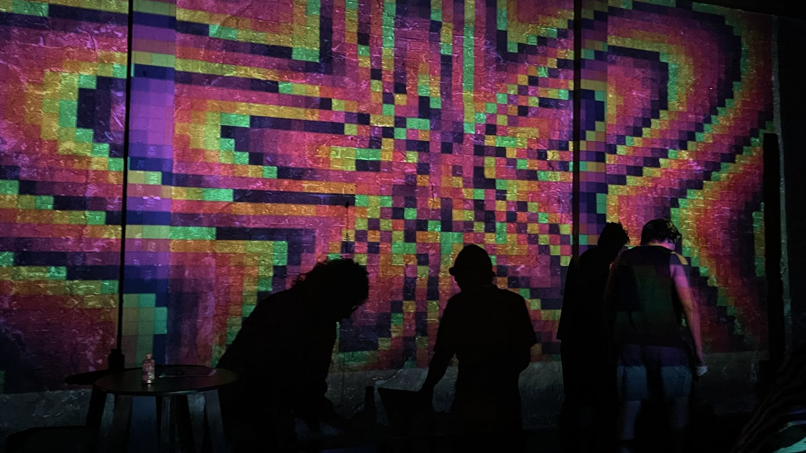
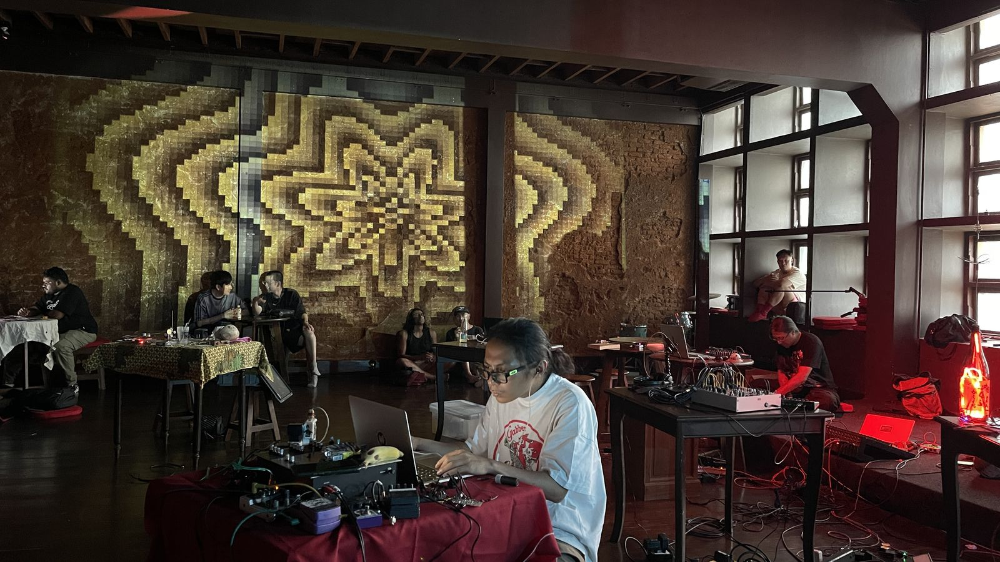

Mundane Moosh Moosh turns boring, everyday software into a visual instrument. A Google Sheet fills with random numbers, each cell coloured by its value, and live sound pushes the numbers so the whole grid moves as a projected visual. Made during the Arai-Eek Lab residency, it was performed at Rong Sa Dang, Chiang Mai, with Arai-Eek musicians and performers, then opened as a workshop in which participants hacked the formulas themselves. The kit is open source.
